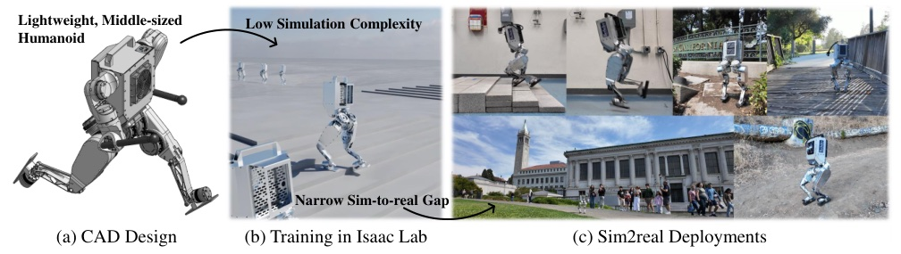
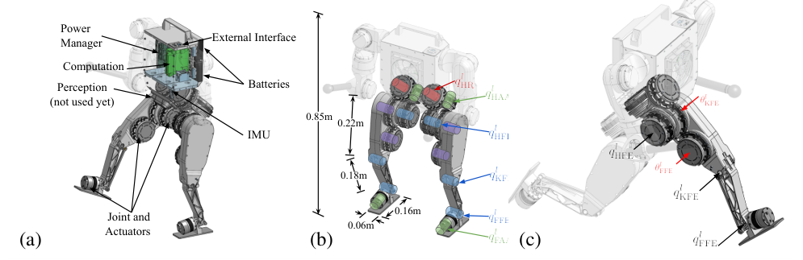
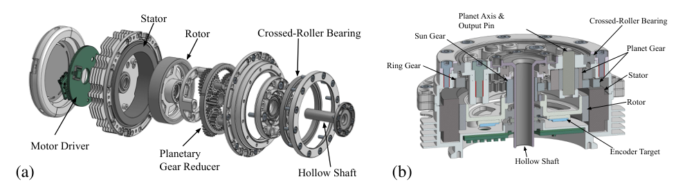
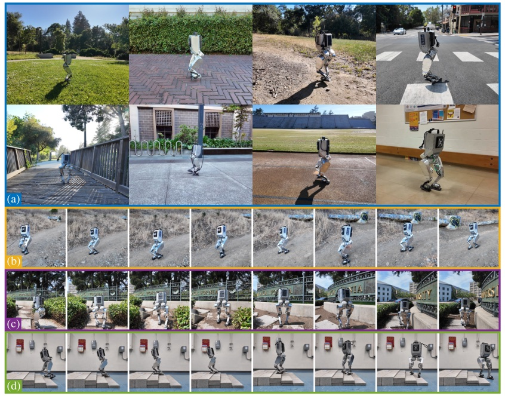
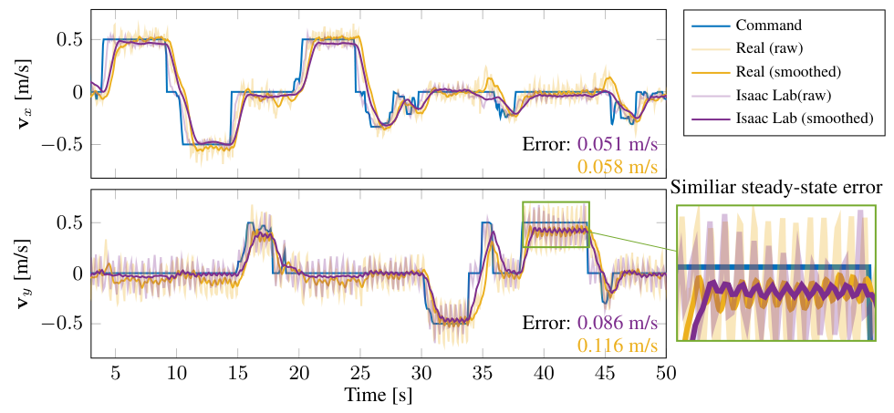
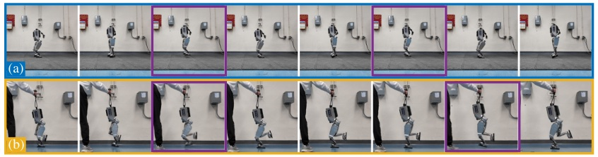

Background & Motivation
Berkeley Humanoid 是 UC Berkeley 自研的 16 kg、0.85 m 中型人形研究平台(本文只有雙腿,各 6 DoF)。它的核心主張是:把「縮小 sim-to-real gap」當成硬體設計規格——12 顆自製 9:1 行星減速 QDD 致動器直接當關節、拿掉所有彈簧/阻尼與閉鏈、EtherCAT 低延遲通訊、從 CAD 取轉子慣量並逐顆實測摩擦——於是只需小範圍、可辨識的 domain randomization,一個不吃歷史、沒有相位訊號、沒有參考動作的 MLP PPO 策略就能零樣本上實機:戶外 10 分鐘走 364 m、爬陡峭碎石小徑、被踢能恢復、雙腳與單腳跳躍;前進速度追蹤誤差模擬 0.051 vs 實機 0.058 m/s。整機(不含手臂)零件成本約 1 萬美元。
Berkeley Humanoid is an in-house 16 kg, 0.85 m mid-scale humanoid research platform from UC Berkeley (legs only in this paper, 6 DoF each). Its core thesis: treat "a narrow sim-to-real gap" as a hardware design spec—twelve custom 9:1 planetary QDD actuators mounted directly as joints, no springs, dampers or closed chains, low-latency EtherCAT, rotor inertia from CAD and per-actuator measured friction. Then only narrow, identifiable domain randomization is needed, and a memoryless MLP PPO policy (no history, no phase signal, no reference motion) transfers zero-shot: 364 m of campus walking in 10 minutes, a steep unpaved trail, kick recovery, double- and single-leg hopping; sagittal velocity-tracking error 0.051 m/s in sim vs 0.058 m/s on hardware. Parts cost about USD 10K (without arms).

如果只有 30 秒In 30 seconds
- 問題 — 全尺寸人形重、危險、需吊架與一整組人;為 model-based 控制設計的彈簧/連桿/諧波傳動在大規模平行模擬器裡又慢又難準;RL 社群只好用歷史輸入、teacher-student、寬 domain randomization 去補 gap,換來複雜度與保守策略。
- Problem — Full-scale humanoids are heavy, dangerous, and need a gantry plus a team; springs/linkages/harmonic drives designed for model-based control are slow and hard to simulate accurately in massively parallel simulators; RL then patches the gap with history inputs, teacher-student, and wide domain randomization, paying in complexity and conservative policies.
- 方法 — 以四個設計原則造機器人:Simulation-Friendly、Reliable & Low-Cost、Experiment-Friendly、Anthropomorphic;再配上一個「極簡組成」的 RL 控制器(只吃當下狀態的 MLP + PPO + Isaac Lab)與「設計賦能的精準 DR」。
- Method — Build the robot around four principles: Simulation-Friendly, Reliable & Low-Cost, Experiment-Friendly, Anthropomorphic; pair it with a "minimally composed" RL controller (a memoryless MLP + PPO in Isaac Lab) and "design-enabled accurate DR."
- 結果 — 全向行走、8 類地形、平均約 \(20^\circ\) 的碎石坡、4 cm 石階、被踢恢復;10 分鐘 364 m;雙腳/單腳跳;模擬與實機速度追蹤誤差相近;整個專案跌倒 38 次,硬體幾乎無損(僅兩次螺絲/膠鬆脫);BOM USD 9,955。
- Results — Omnidirectional walking, 8 terrain types, a trail averaging about 20 degrees, 4 cm rocky stairs, kick recovery; 364 m in 10 minutes; double- and single-leg hopping; similar sim and real tracking errors; 38 recorded falls with essentially no hardware damage (only two loose-screw/glue failures); BOM USD 9,955.
領域脈絡Field context
論文把電動人形分三級:全尺寸(成人大小)、中型(兒童大小)、迷你(遠小於人)。全尺寸研究平台(TORO、LOLA、WALK-MAN)多用高減速比 Harmonic Drive;Cassie/Digit 在高負載關節用 cycloidal 減速再配彈簧與連桿,這讓 reduced-order、step-to-step 的 model-based 控制器好設計,但作者認為對近年的 learning-based 演算法反而不利。另一支是 Quasi-Direct-Drive(QDD):Unitree H1、ARTEMIS、MIT Humanoid、Unitree G1、HECTOR、BRUCE 都用低減速比行星齒輪,更適合動態動作,但中型/迷你平台多數腿只有 5 DoF(缺踝關節 roll)。
The paper sorts electric humanoids into full-scale (adult size), mid-scale (child size), and miniature. Full-scale research platforms (TORO, LOLA, WALK-MAN) mostly use high-ratio Harmonic Drives; Cassie/Digit use cycloidal drives on high-load joints combined with springs and linkages, which makes reduced-order, step-to-step model-based controllers easy—but, the authors argue, hurts modern learning-based training and deployment. The other branch is Quasi-Direct-Drive (QDD): Unitree H1, ARTEMIS, MIT Humanoid, Unitree G1, HECTOR, BRUCE all use low-ratio planetaries suited to dynamic motion, yet most mid-scale/miniature ones have only 5-DoF legs (no ankle roll).
控制端,RL 已讓人形做到崎嶇地形、抗擾、跑步、parkour,但這些工作常靠複雜網路、狀態-動作歷史做線上適應,或寬分布的 DR去抵銷「傳動複雜、模型不準」帶來的 gap。中型人形又多一層難度:重心低、慣量小 → 小力就造成大運動;腿短 → 步幅小、抗擾要踏多步;步頻高 → 需要快又準的致動。
On the control side, RL has given humanoids rough-terrain walking, disturbance rejection, running, even parkour—but these works often rely on complex networks, state-action history for online adaptation, or wide DR distributions to offset the gap caused by complex transmissions and imprecise models. Mid-scale humanoids add difficulty: low CoG and low inertia → small forces produce large motions; short legs → short strides, multiple steps to recover; high step frequency → fast, precise actuation is required.
這是一篇 hardware–learning co-design 論文。與其「讓策略對一台難模擬的機器人夠 robust」,不如「把機器人做成容易被模擬」。sim-to-real 的負擔從演算法(歷史編碼器、adaptation module、寬 DR)搬到了機構設計(致動器即關節、無彈簧、低延遲匯流排)。控制器刻意做得極簡,正是為了讓硬體成為唯一的「解釋變數」。[導讀補充]
This is a hardware–learning co-design paper. Instead of "making the policy robust to a hard-to-simulate robot," it "makes the robot easy to simulate." The sim-to-real burden moves from the algorithm (history encoders, adaptation modules, wide DR) to mechanism design (actuator-as-joint, no springs, a low-latency bus). The controller is deliberately minimal precisely so that hardware is the only "explanatory variable." [guide note]
核心洞見 · KEY INSIGHTSKEY INSIGHTS
值得帶走的不是「又一台人形」,而是這幾個設計觀念:
What's worth taking away is not "yet another humanoid" but these design ideas:
- 「可模擬性」是一個硬體規格。 彈簧、阻尼、閉鏈、複雜傳動不只增加製造難度,也增加模擬成本與建模誤差;在 RL 時代,它們的代價要重新記帳。
- "Simulatability" is a hardware spec. Springs, dampers, closed chains and complex transmissions add not only build difficulty but simulation cost and modeling error; in the RL era their price must be re-accounted.
- 致動器就是關節。 交叉滾子軸承讓致動器直接承受關節負載;模擬時只要在關節質量矩陣對角線加上 armature(轉子反射慣量 \(N^2J_r\))+ 摩擦 + 力矩源,不必模擬致動器內部動力學。
- The actuator is the joint. A crossed-roller bearing lets each actuator carry the joint load directly; in simulation you add armature (reflected rotor inertia \(N^2J_r\)) to the mass-matrix diagonal + friction + an ideal torque source—no internal actuator dynamics to simulate.
- 低延遲 + 高頻寬 = 不必模擬延遲。 EtherCAT 最大延遲 0.5–2 ms、力矩控制頻寬 1 kHz,讓致動器可被當成無延遲的力矩源。對照 ANYmal 需要學一個 actuator network [導讀補充],這裡是「把致動器設計到不需要學模型」。
- Low latency + high bandwidth = no latency to simulate. EtherCAT max latency of 0.5–2 ms and 1 kHz torque bandwidth let the actuator be treated as an ideal, delay-free torque source. Contrast ANYmal, which needed a learned actuator network [guide note]: here the actuator is designed so no learned model is needed.
- 「精準 DR」取代「寬 DR」。 機器人本體參數只在可辨識的小範圍內擾動(armature \(\times[1.0,1.05]\)、摩擦與連桿質量 \(\pm10\%\)),環境接觸才寬擾動(地面摩擦 \([0.2,1.25]\));刻意不隨機化 motor strength 與 PD gains,作者稱之為「lazy approach」。
- "Accurate DR" instead of "wide DR." Robot parameters are perturbed only in small, identifiable ranges (armature \(\times[1.0,1.05]\), friction and link masses \(\pm10\%\)); only environment contact is randomized widely (ground friction \([0.2,1.25]\)). Motor strength and PD gains are deliberately not randomized—the authors call that a "lazy approach."
- 極簡控制器是一支「探針」。 沒有歷史就無法線上辨識系統;因此若它在實機表現接近模擬,就間接說明模擬 MDP 與真實 MDP 很接近——同時也是平台的 baseline。
- The minimal controller is a "probe." Without history it cannot identify the system online; so if it performs on hardware close to simulation, that indirectly shows the sim MDP matches the real MDP—and it doubles as the platform baseline.
- 學習讓便宜感測器可用,輕量讓實驗變快。 手機等級 IMU 晶片 < 1 美元(模組 50 美元)取代約 1000 美元的 IMU;16 kg 一人即可操作,跌倒後 3–5 秒即可重啟策略——研究吞吐量本身就是設計目標。
- Learning makes cheap sensors viable; light weight makes experiments fast. A phone-grade IMU chip under 1 USD (50 USD module) replaces roughly 1,000 USD IMUs; at 16 kg one person can operate it, and the policy is resumed 3–5 s after a fall—research throughput is itself a design target.
Problem Diagnosis
現況 vs 痛點Status quo vs pain points
| 現有做法Existing approach | 它的痛點Its pain point |
|---|---|
| 全尺寸人形Full-scale humanoids TORO, LOLA, WALK-MAN, H1, Digit | Table 1 全尺寸機 35–132 kg、高扭矩致動器約 300 Nm 等級 → 實驗危險、需吊架與 2–3 人搬運;實驗場地與地形布置都昂貴。full-scale robots in Table 1 weigh 35–132 kg, with high-torque actuators around 300 Nm → dangerous experiments, gantries, 2–3 people to handle; test spaces and terrain setups are costly. |
| 為 model-based 設計的傳動Transmissions designed for model-based control Cassie/Digit 的彈簧+連桿、諧波/擺線減速Cassie/Digit springs + linkages, harmonic/cycloidal drives | 單向彈簧與閉鏈要額外解動力學方程、平行化成本高;許多模擬器只能在關節空間施力,致動器的限幅、雜訊、摩擦、轉子與連桿慣量很難精確映射到關節空間並隨機化;延遲與致動器動力學還要更小的時間步。Unilateral springs and closed chains require extra dynamics equations and parallelize poorly; many simulators only apply joint-space torques, so actuator limits, noise, friction, rotor and linkage inertia are hard to map into joint space and randomize accurately; delays and actuator dynamics demand smaller time steps. |
| 商用人形Commercial humanoids Optimus, Atlas, Unitree | 設計精良,但多數買不到,或不開放修改底層系統;精細硬體參數(轉子慣量、摩擦)難以取得。Well engineered, but mostly unavailable, or closed at the low level; detailed hardware parameters (rotor inertia, friction) are hard to obtain. |
| 演算法端補 gapClosing the gap in the algorithm 歷史、teacher-student、寬 DRhistory, teacher-student, wide DR | 網路與訓練管線變複雜;過度 DR 會讓學習失敗或策略過度保守;隨機化「motor strength / PD gains」的範圍只能靠經驗猜。Networks and pipelines get complex; excessive DR can prevent learning or yield over-conservative policies; ranges for "motor strength / PD gains" randomization are guessed heuristically. |
| 迷你人形(伺服馬達+大腳板)Miniature humanoids (servos + big flat feet) | 好控制但動態能力有限(如踢足球的迷你人形)。Easy to control but limited dynamic capability (e.g., the soccer-playing miniature humanoid). |
核心問題:「能不能把機器人本身設計成『好模擬、耐摔、便宜、一個人就能做實驗』,讓最陽春的 RL 控制器也能零樣本、窄 gap 地上實機?」
The core question: "Can the robot itself be designed to be easy to simulate, fall-tolerant, cheap and one-person-operable, so that even the plainest RL controller transfers zero-shot with a narrow gap?"
定位:與其他電動人形比較(Table 1 節選)Positioning vs other electric humanoids (Table 1, selected)
| Robot | 尺寸Size | 平均腿段 (m)Avg leg (m) | 腿 DoFLeg DoF | 重量 (kg)Mass (kg) | 價格 (USD)Price (USD) | 致動Act. | HFE / KFE (Nm) | KFE 指標 [導讀補充]KFE index [guide note] |
|---|---|---|---|---|---|---|---|---|
| Unitree H1 | F | 0.4 | 5 | 47 | 90K | P | 270 / 360 | 0.98 |
| Digit | F | 0.5 | 6 | 50 | 250K | C, H | 200 / 230 | 0.47 |
| Cassie | F | 0.5 | 5 | 35 | 250K | C, H | 195 / 195 | 0.57 |
| MIT Humanoid | M | 0.28 | 5 | 24 | – | P | 72 / 144 | 1.09 |
| Unitree G1 | M | 0.3 | 6 | 35 | 16K | P | 88 / 139 | 0.67 |
| HECTOR | M | 0.22 | 5 | 16 | – | P | 33.5 / 51.9 | 0.75 |
| iCub | M | 0.2 | 6 | 24 | 300K | H | 40 / 40 | 0.42 |
| BRUCE | S | 0.17 | 5 | 3.3 | 6.5K | P | 10.5 / 10.5 | 0.95 |
| Berkeley Humanoid | M | 0.2 | 6 | 16(無臂)16 (no arms) | 10K(無臂)10K (no arms) | P | 62.6 / 81.1 | 1.29(含臂估 0.94)1.29 (0.94 with arms est.) |
F/M/S = 全尺寸/中型/迷你;H/P/C = 諧波/行星/擺線。最後一欄是導讀者自算的無因次膝扭矩指標 \(\tau_{\text{KFE}}/(m\,g\,L)\),其中腿長 \(L\) 取「平均腿段 \(\times 2\)」,粗略衡量「膝蓋能否撐起全身重量的力臂」。本機以 16 kg 無手臂入表,其他機器人多含手臂;若加上估計的 6 kg 手臂,指標由 1.29 降到 0.94,仍屬前段但不再遙遙領先。[導讀補充]
F/M/S = full/mid/small; H/P/C = harmonic/planetary/cycloidal. The last column is the guide author's own dimensionless knee-torque index \(\tau_{\text{KFE}}/(m\,g\,L)\) with leg length \(L\) taken as "avg leg segment \(\times 2\)"—a crude measure of whether the knee can hold the full body weight at the leg's lever arm. This robot enters the table at 16 kg without arms, while most others include arms; adding the estimated 6 kg of arms drops the index from 1.29 to 0.94—still near the top, but no longer far ahead. [guide note]
Gap 表 — 誰缺什麼,Berkeley Humanoid 怎麼補Gap table — who lacks what, and how Berkeley Humanoid fills it
| 前作Prior work | 限制Limitation | 本文如何補上How this paper fills it |
|---|---|---|
| Cassie / Digit | 彈簧、閉鏈、擺線/諧波傳動;每台約 25 萬美元。Springs, closed chains, cycloidal/harmonic drives; about USD 250K each. | 移除所有彈性/吸能元件與閉鏈,致動器直接當關節;唯一例外是 KFE–FFE 的線性耦合連桿。Remove every flexible/energy-absorbing element and closed chain; actuators are the joints. The only exception is a linear KFE–FFE coupling linkage. |
| TORO / LOLA / WALK-MAN | 高減速比諧波傳動、68–132 kg。High-ratio harmonic drives, 68–132 kg. | 9:1 行星 QDD,摩擦不確定性小、可反驅;整機 16 kg,一人可操作。9:1 planetary QDD with small friction uncertainty and backdrivability; 16 kg total, one-person operation. |
| 商用平台Commercial platforms | 底層封閉、參數未知。Closed low level, unknown parameters. | 幾乎全部自製(致動器、驅動板、IMU、EtherCAT 從站、電源板)→ CAD 慣量與逐顆摩擦量測可得。Almost everything in-house (actuators, drivers, IMU, EtherCAT clients, power board) → CAD inertia and per-actuator friction measurements are available. |
| RMA / Li et al. 2024 / [48,66] | 歷史編碼、teacher-student、motor strength / PD gain 隨機化。History encoders, teacher-student, motor-strength / PD-gain randomization. | 只吃當下狀態的 MLP + 只隨機化可辨識參數的精準 DR。A memoryless MLP + accurate DR randomizing only identifiable parameters. |
| HECTOR / MIT / H1 / Cassie | 腿只有 5 DoF(無踝 roll)。5-DoF legs (no ankle roll). | 每腿 6 DoF 含 FAA,關節範圍對齊人體,靜態姿勢更穩、可望單腳平衡。6 DoF per leg including FAA, joint ranges matched to humans; more stable static poses and potential one-foot balance. |
注意作者對彈簧連桿設計的批評是「對 learning 不友善」,不是「性能差」——Cassie 的彈簧本來是為了儲能與吸收衝擊。本文其實是用被動柔順性換可模擬性,並賭在 16 kg 這個尺度下,剛性傳動 + 鋁合金 + 鋼齒輪也扛得住跌倒衝擊。[導讀補充]
Note the critique of spring-linkage designs is that they are unfriendly to learning, not that they perform badly—Cassie's springs exist to store energy and absorb impacts. The paper effectively trades passive compliance for simulatability, betting that at 16 kg a rigid drivetrain + aluminum + steel gears can survive falls anyway. [guide note]
Core Method: Design for Learning
整體管線:從機構到策略Pipeline: from mechanism to policy
系統總覽System overview

16 kg 全電動;軀幹 + 兩條 6-DoF 腿;兩隻 4-DoF 手臂已設計但為專注行走而未安裝。為因應各關節不同扭矩需求,做了 4 型致動器(以馬達尺寸命名:5013、8513、8518、10413)與 2 型馬達驅動板。自製 EtherCAT 從站(馬達驅動板與 IMU)與機上 PC 的 EtherCAT master 以 1–4 kHz 通訊;軀幹內另有路由器提供有線/無線除錯,並保留 USB/乙太網給深度相機、光達等外接感測器。
16 kg, fully electric; a torso + two 6-DoF legs; two 4-DoF arms were designed but left off to focus on locomotion. To meet different joint torque needs there are 4 actuator types (named by motor size: 5013, 8513, 8518, 10413) and 2 motor-driver types. Custom EtherCAT clients (motor drivers and IMU) talk to the onboard PC's EtherCAT master at 1–4 kHz; a router in the torso gives wired/wireless debugging, and USB/Ethernet are left for external sensors such as depth cameras or lidar.
自製 QDD 致動器The custom QDD actuator

四型致動器全部 9:1 行星減速,峰值扭矩 9.7–81.1 Nm,質量 251–1011 g(完整規格見 04 RESULTS)。若是 ring 固定、sun 輸入、carrier 輸出的單級行星,減速比為
All four types use a 9:1 planetary reduction, with peak torque 9.7–81.1 Nm and mass 251–1011 g (full specs in 04 RESULTS). For a single-stage planetary with fixed ring, sun input and carrier output, the ratio is
[導讀補充] 論文只給 9:1 與剖面圖,齒數與是否單級未明說;此式為標準行星齒輪關係。QDD 的關鍵是 \(N\) 夠小:輸出端看到的轉子慣量與摩擦都隨 \(N\) 放大(見下),\(N\) 小才「透明」、可反驅,並可用電流估扭矩。
[guide note] The paper gives only 9:1 and the cross-section; tooth counts and stage count are not stated—this is the standard planetary relation. The point of QDD is a small \(N\): rotor inertia and friction seen at the output scale with \(N\) (below), so small \(N\) means "transparent," backdrivable actuation whose torque can be estimated from current.
原則 1 · Simulation-Friendly(全文主角)Principle 1 · Simulation-Friendly (the protagonist)
動機。主流 RL 用大規模平行模擬器;帶單向彈簧的連桿、閉鏈傳動要解額外方程,模擬貴,而且致動器/傳動造成的限幅、雜訊、摩擦、轉子與連桿慣量很難精準又有效率地在關節空間建模與隨機化;要模擬通訊延遲、致動器動力學、不準的執行頻率,又得更小的時間步。
Motivation. Mainstream RL uses massively parallel simulators; linkages with unilateral springs and closed-chain transmissions require extra equations and are expensive to simulate, and the limits, noise, friction, rotor and linkage inertia they induce are hard to model and randomize accurately and efficiently in joint space; simulating communication delay, actuator dynamics and inaccurate execution rates needs even smaller time steps.
做法。移除所有彈簧/阻尼與閉鏈,用最簡單的致動器-關節傳動;每顆致動器帶交叉滾子軸承、直接當關節。於是模擬器裡每個關節就是一般的剛體關節動力學,只多一項 armature:
Approach. Remove all springs/dampers and closed chains, use the simplest actuator-to-joint transmission; each actuator has a crossed-roller bearing and is mounted directly as the joint. Every joint in the simulator is then ordinary rigid-body joint dynamics plus one armature term:
\(M\):關節空間質量矩陣;\(h\):科氏/離心 + 重力;\(\tau_f\):關節摩擦;\(J_c^\top\lambda\):接觸力。論文的原話是「把轉子慣量以 armature 加到關節質量矩陣的對角線」;\(I_a=N^2J_r\) 是反射慣量的標準關係 [導讀補充]。以 10413 為例:\(81\times1.5\times10^{-4}\approx1.2\times10^{-2}\,\mathrm{kg\,m^2}\)。
\(M\): joint-space mass matrix; \(h\): Coriolis/centrifugal + gravity; \(\tau_f\): joint friction; \(J_c^\top\lambda\): contact forces. The paper says rotor inertia is "added as armature to the diagonal of the joint mass matrix"; \(I_a=N^2J_r\) is the standard reflected-inertia relation [guide note]. For the 10413: \(81\times1.5\times10^{-4}\approx1.2\times10^{-2}\,\mathrm{kg\,m^2}\).
唯一例外:KFE–FFE 連桿。為了在踝關節給大扭矩,FFE 用連桿傳動,造成 KFE 與 FFE 之間「耦合但線性」的關節-致動器映射,因此仍可把致動器當成關節來模擬:
The one exception: the KFE–FFE linkage. To deliver large ankle torque, FFE uses a linkage, producing a "coupled but linear" joint–actuator mapping between KFE and FFE, so the actuators can still be simulated as joints:
[導讀補充] 論文沒給 \(A\) 的數值;力矩關係由虛功原理 \(\tau_\theta^\top\dot\theta=\tau_q^\top\dot q\) 推得。平行四邊形連桿通常讓 \(A\) 為元素 \(0,\pm1\) 的三角矩陣。值得注意:耦合時轉子慣量在關節座標下是 \(A^{-\top}\operatorname{diag}(N^2J_r)A^{-1}\),會有非對角項——只加對角 armature 是一個小近似(見 CRITIQUE Q5)。
[guide note] The paper gives no numbers for \(A\); the torque relation follows from virtual work \(\tau_\theta^\top\dot\theta=\tau_q^\top\dot q\). Parallelogram linkages usually make \(A\) triangular with entries in \(0,\pm1\). Notably, under coupling the rotor inertia in joint coordinates is \(A^{-\top}\operatorname{diag}(N^2J_r)A^{-1}\), which has off-diagonal terms—adding only diagonal armature is a small approximation (see CRITIQUE Q5).
致動與通訊。行星 QDD 只帶來「微小、易於在關節空間建模」的摩擦不確定性;EtherCAT 讓最大延遲只有 0.5–2 ms(4 kHz 時 0.5 ms、1 kHz 時 2 ms),馬達力矩控制頻寬 1 kHz,因此致動器可在模擬中當成無延遲的力矩源;訓練時「只模擬關節、不模擬致動器動力學」。結果:在 NVIDIA A4500 上每秒超過 90,000 個模擬步。
Actuation and communication. The planetary QDD introduces only "minor friction uncertainties that are easy to model in joint space"; EtherCAT keeps max latency at 0.5–2 ms (0.5 ms at 4 kHz, 2 ms at 1 kHz), and motor torque-control bandwidth is 1 kHz, so the actuator is simulated as a delay-free torque source; training "simulates joints only, not actuator dynamics." Result: over 90,000 simulation steps per second on an NVIDIA A4500.
策略輸出目標關節角,由馬達驅動板上的 PD 轉成力矩(增益論文未給):
The policy outputs target joint angles, converted to torque by a PD loop on the motor driver (gains not reported):
[導讀補充] clip 是導讀者補上的常見實作(Isaac Lab 的理想 PD 致動器會截斷到 effort limit)。論文在 Limitations 自承:接近飽和時的扭矩-電流非線性、馬達的工作區域(torque-speed region)與過熱保護都還沒進模擬——也就是說,模擬中的致動器上限大致是一個「方盒子」。
[guide note] The clip is the guide author's addition, a common implementation (Isaac Lab's ideal PD actuator clamps to the effort limit). The paper's Limitations admit that torque–current nonlinearity near saturation, the motor's region of work (torque–speed envelope) and thermal protection are not yet simulated—i.e., the simulated actuator limit is roughly a "box."
原則 2 · Reliable & Low-CostPrinciple 2 · Reliable & Low-Cost
- 材料:主結構 7075 / 6061 鋁合金,齒輪箱與連桿用 SKD11 鋼——刻意不走 3D 列印/低成本材料路線(與 K-Scale、Pandora 等對比),以輕量結構扛重摔。
- Materials: 7075 / 6061 aluminum for main parts, SKD11 steel for gearbox and linkage—deliberately not the 3D-printed/low-cost-material route (contrast K-Scale, Pandora), so a light structure survives heavy impacts.
- 線材:接觸環境造成的摩擦與振動會撕裂線材;三型大致動器的中空軸讓線從關節軸心穿過,把關節運動造成的拉扯降到最低。
- Cables: friction and vibration from environmental contact tear cables; the hollow shafts of the three larger actuators route cables through the joint axis, minimizing tearing from joint motion.
- 免額外力感測:QDD 讓關節扭矩可由電流估計,不需應變規;再用廣義動量觀測器(generalized momentum observer)估每隻腳的接觸力旋量,不需接觸/力感測器。
- No extra force sensors: QDD lets joint torque be estimated from current without strain gauges; a generalized momentum observer can then estimate each foot's contact wrench without contact or F/T sensors.
- 便宜感測器:學習對硬體不準較 robust,因此用手機等級 IMU ICM42688(晶片 < 1 美元)取代前作約 1000 美元的 IMU。唯二非自製件是電腦(i7-1255U)與電池(DJI TB50)。
- Cheap sensors: learning tolerates hardware inaccuracy, so a phone-grade ICM42688 IMU (chip under 1 USD) replaces the roughly 1,000 USD IMUs of prior work. The only non-custom parts are the computer (i7-1255U) and batteries (DJI TB50).
電流估扭矩與動量觀測器的標準形式如下 [導讀補充:論文只引用 Haddadin et al. 2008,未寫公式,也未實驗展示]:
Standard forms of current-based torque estimation and the momentum observer [guide note: the paper only cites Haddadin et al. 2008, gives no formula, and shows no experiment]:
殘差 \(r\) 以一階濾波收斂到外力矩 \(\tau_{\text{ext}}=J_c^\top F_c\),再反解腳底力 \(F_c\)。它需要一個可信的扭矩估計 \(\hat\tau\)——這正是低減速比 QDD 的價值。
The residual \(r\) converges (first-order filter) to the external torque \(\tau_{\text{ext}}=J_c^\top F_c\), from which the foot force \(F_c\) is solved. It needs a trustworthy torque estimate \(\hat\tau\)—exactly what a low-ratio QDD provides.
原則 3 & 4 · Experiment-Friendly、AnthropomorphicPrinciples 3 & 4 · Experiment-Friendly, Anthropomorphic
實驗友善。傳統全尺寸人形常比同身高的人還重,搬運需 2–3 人加吊架;約 300 Nm 的致動器更有傷人風險。本機16 kg,室內只需一名操作員,戶外加一名攝影——指令、收資料、拍片、跌倒後重置都一人完成,全文實驗皆如此。
Experiment-friendly. Traditional full-scale humanoids often outweigh a person of the same height, needing 2–3 people plus a gantry; ~300 Nm actuators risk injuries. This robot is 16 kg: one operator indoors, plus an optional camera person outdoors—commanding, logging, filming and resetting after falls; every experiment in the paper used this setup.
擬人。每腿 6 DoF 複製人腿常見建模;相較 5-DoF 平台多了踝關節 roll(FAA),改善困難靜態姿勢的穩定、可望單腳平衡;各關節極限對齊人體,既保護硬體又保留模仿人類動作的範圍(Table 5):
Anthropomorphic. 6 DoF per leg replicates common human-leg modeling; compared with 5-DoF platforms it adds ankle roll (FAA), improving stability in hard static poses and potentially enabling one-foot balance; joint limits are aligned to human limits, protecting hardware while keeping enough range to imitate human motion (Table 5):
| 關節(右腿)Joint (right leg) | HR | HAA | HFE | KFE | FFE | FAA |
|---|---|---|---|---|---|---|
| 人體 (deg)Human (deg) | \([-50,40]\) | \([-40,20]\) | \([-110,30]\) | \([0,150]\) | \([-20,50]\) | \([-30,18]\) |
| 本機 (deg)Robot (deg) | \([-35,35]\) | \([-35,35]\) | \([-100,30]\) | \([0,120]\) | \([-30,70]\) | \([-30,30]\) |
| 覆蓋率Coverage | 77.8% | 91.6% | 92.9% | 80.0% | 100% | 100% |
覆蓋率 = 兩區間交集長度 / 人體區間長度。髖旋轉(HR)與膝屈曲(KFE)覆蓋最低,深蹲、盤腿類動作會受限。[導讀補充]
Coverage = overlap length / human range length. Hip rotation (HR) and knee flexion (KFE) have the lowest coverage, limiting deep squats or cross-legged poses. [guide note]
極簡組成的 RL 控制器The minimally composed RL controller
任務寫成 MDP,用 PPO 在 Isaac Lab 訓練。所謂「極簡」有三層:(1) actor 只吃當下狀態——沒有短/長歷史、沒有 teacher-student 估環境參數;(2) 沒有預定相位訊號或參考動作,減少人為偏置;(3) 最基本的 MLP。觀測與動作:
Tasks are MDPs solved with PPO in Isaac Lab. "Minimal" has three layers: (1) the actor sees only the immediate state—no short/long history, no teacher-student estimation of environment parameters; (2) no predefined phase signal or reference motion, reducing human bias; (3) the most basic MLP. Observation and action:
\(\omega_t\):基座角速度;\(g_t\):投影重力向量;\(q_t,\dot q_t\):關節角/角速度;\(\hat v_t\):由狀態估測器(Flayols et al. 2017)給的基座線速度;\(v^c,\omega^c_z\):速度指令;\(a_{t-1}\):上一步動作。依此算來維度為 \(3+3+12+12+3+3+12=48\) [導讀補充:論文未寫維度]。
\(\omega_t\): base angular velocity; \(g_t\): projected gravity; \(q_t,\dot q_t\): joint positions/velocities; \(\hat v_t\): base linear velocity from a state estimator (Flayols et al. 2017); \(v^c,\omega^c_z\): velocity commands; \(a_{t-1}\): previous action. That gives \(3+3+12+12+3+3+12=48\) dims [guide note: dimension not stated in the paper].
| 元件Component | 設定Setting |
|---|---|
| Actor / Critic | MLP,hidden \([512,256,128]\),ELUMLP, hidden \([512,256,128]\), ELU |
| 演算法 / 模擬器Algorithm / simulator | PPO · Isaac Lab |
| 執行頻率Rates | 策略 50 Hz · 狀態估測 1 kHz · PD 25 kHzpolicy 50 Hz · state estimator 1 kHz · PD 25 kHz |
| 未報告Not reported | reward 權重、PD 增益、並行環境數、訓練時間、PPO 超參數、critic 是否用特權資訊reward weights, PD gains, number of envs, training time, PPO hyperparameters, whether the critic gets privileged info |
Reward 結構(附錄 A)。論文只描述各項、未給函數形式與權重,以下以權重 \(w_i\) 標示結構:
Reward structure (Appendix A). The paper describes the terms but gives neither functional forms nor weights; below, weights \(w_i\) mark the structure:
- tracking:前進/側向線速度與 yaw 角速度的誤差(論文說「以 L2 norm 實作」)。
- tracking: errors of sagittal/lateral linear velocity and yaw rate (the paper says "implemented as the L2 norm").
- smoothing:懲罰垂直速度、roll/pitch 角速度、關節扭矩、action rate。
- smoothing: penalize vertical velocity, roll/pitch rates, joint torques, action rate.
- \(r_{\text{reg}}\):髖、膝關節貼近標稱姿勢;軀幹直立;致動器軟限位,超過即罰——防止危險動作。
- \(r_{\text{reg}}\): keep hip and knee near nominal; upright torso; soft actuator limits penalized beyond threshold—preventing dangerous motions.
- \(r_{\text{gait}}\):鼓勵腳在空中停留較久(feet air time)、不打滑、接觸力不超過門檻以保護齒輪箱。
- \(r_{\text{gait}}\): encourage longer feet air time, no slipping, and contact forces under a threshold to protect gearboxes.
- 跳躍任務:把垂直速度懲罰換成獎勵 \(r_{v_z}=\mathrm{ReLU}(v_z)\);取消髖 pitch 與膝的正則化(需要大的向上加速度);單腳跳另罰「懸空腳觸地」。其餘與行走相同。
- Hopping: replace the vertical-velocity penalty by a reward \(r_{v_z}=\mathrm{ReLU}(v_z)\); drop hip-pitch and knee regularization (large upward acceleration is needed); single-leg hopping also penalizes the in-air leg touching the ground. Everything else matches walking.
設計賦能的精準 Domain Randomization(Table 6)Design-enabled accurate domain randomization (Table 6)
作者把不確定性分兩類:機器人本體物理性質(如各連桿質量)與執行任務時的接觸。前者因為自製、有 CAD 與逐顆摩擦實驗,可以給小而準的範圍;後者無法辨識,就給寬範圍(地面摩擦、恢復係數、外力推擾)。至於無法歸入這兩類的「motor strength 比例」或 PD gains,刻意不隨機化。
Uncertainty is split into two kinds: the robot's physical properties (e.g., link masses) and contact during the task. The former, thanks to in-house CAD and per-actuator friction tests, gets small, accurate ranges; the latter is unidentifiable and gets wide ranges (ground friction, restitution, external pushes). Parameters fitting neither—a generic "motor strength" ratio or PD gains—are deliberately not randomized.
| 動力學項Dynamics term | 範圍Range | 類別 / 解讀Category / reading |
|---|---|---|
| 地面摩擦Ground friction | \([0.2,\,1.25]\) | 環境 · 寬environment · wide |
| 恢復係數Restitution | \([0,\,0.1]\) | 環境environment |
| 基座質量Base mass | \([-1.0,\,+1.0]\) | 本體(推測為加減 kg,約 \(\pm6\%\))[導讀補充]robot (presumably added kg, about \(\pm6\%\)) [guide note] |
| 連桿質量Linkage mass | \(\times[0.9,\,1.1]\) | 本體 · 窄robot · narrow |
| 關節摩擦Joint friction | \(\times[0.9,\,1.1]\) | 本體 · 繞實測值robot · around measured values |
| Joint armature | \(\times[1.0,\,1.05]\) | 本體 · 最窄且只往上:CAD 轉子慣量被當成下界 [導讀補充]robot · narrowest and one-sided: CAD rotor inertia treated as a lower bound [guide note] |
| 預設關節角偏移Default joint pos offset | \([-0.05,\,0.05]\) | 本體(校正誤差)robot (calibration error) |
| 雜訊項Noise term | Lin Vel | Ang Vel | IMU | Hip Pos | KFE Pos | FFE Pos | FAA Pos | Joint Vel |
|---|---|---|---|---|---|---|---|---|
| \(\pm\) | 0.1 | 0.2 | 0.05 | 0.03 | 0.05 | 0.08 | 0.03 | 1.5 |
共 6 個動力學參數 + 8 個雜訊項(再加文中提到的外力推擾)。沒有延遲隨機化、沒有 motor strength、沒有 PD gain 隨機化。關節位置雜訊以 FFE 最大(0.08)、KFE 次之(0.05),恰好是走連桿傳動的兩個關節,可能反映連桿背隙/柔性。[導讀補充]
6 dynamics parameters + 8 noise terms in total (plus the external pushes mentioned in the text). No latency randomization, no motor strength, no PD-gain randomization. Joint-position noise is largest for FFE (0.08) and next for KFE (0.05)—exactly the two linkage-driven joints, possibly reflecting linkage backlash/compliance. [guide note]
符號白話對照Symbols in plain words
| \(N\) | 減速比,本文全部 \(N=9\)。Gear ratio; \(N=9\) for every actuator here. |
| \(J_r,\ I_a\) | 轉子慣量;反射到關節的 armature \(I_a=N^2J_r\)。Rotor inertia; armature reflected to the joint \(I_a=N^2J_r\). |
| \(\theta,\ q\) | 致動器角度 vs 關節角度;除 KFE/FFE 外兩者相同。Actuator angle vs joint angle; identical except for KFE/FFE. |
| \(A\) | KFE–FFE 連桿的常數線性映射矩陣。Constant linear mapping matrix of the KFE–FFE linkage. |
| \(q^d,\ K_p,\ K_d\) | 策略輸出的目標關節角;驅動板 PD 增益。Target joint angles output by the policy; driver PD gains. |
| \(g_t,\ \hat v_t\) | 投影重力(機身姿態);估測的基座線速度。Projected gravity (body attitude); estimated base linear velocity. |
| \(\tau_{\text{peak}},\ \omega_{\max},\ P_{\max}\) | 峰值扭矩、48 V 下最高轉速、最大功率(Table 2)。Peak torque, max speed at 48 V, max power (Table 2). |
| \(r(t)\) | 動量觀測器殘差,收斂到外力造成的關節力矩。Momentum-observer residual, converging to the joint torque caused by external forces. |
Experimental Evidence
硬體規格:四型致動器(Table 2)Hardware specs: four actuator types (Table 2)
| 項目Item | 5013 | 8513 | 8518 | 10413 |
|---|---|---|---|---|
| 每台數量Qty per robot | 2 | 6 | 2 | 2 |
| 質量 (g)Mass (g) | 251 | 756 | 856 | 1011 |
| 減速比Gear ratio | 9:1 | 9:1 | 9:1 | 9:1 |
| 中空軸Hollow shaft | ✗ | ✓ | ✓ | ✓ |
| 直徑 \(\times\) 厚 (mm)Diameter \(\times\) thickness (mm) | \(54.6\times53\) | \(104\times50\) | \(104\times55\) | \(123\times50\) |
| 峰值扭矩 (Nm)Peak torque (Nm) | 9.7 | 45.3 | 62.6 | 81.1 |
| 持續扭矩 (Nm)Sustained torque (Nm) | 4.59 | 18.9 | 26.1 | 34.2 |
| 48 V 最高轉速 (rad/s)Max speed at 48 V (rad/s) | 83.7 | 40.7 | 29 | 27.9 |
| 最大功率 (W)Max power (W) | 220 | 570 | 730 | 890 |
| 轉子慣量 \((\mathrm{kg\,m^2})\)Rotor inertia \((\mathrm{kg\,m^2})\) | \(6.1\times10^{-6}\) | \(6.9\times10^{-5}\) | \(9.4\times10^{-5}\) | \(1.5\times10^{-4}\) |
| 扭矩密度 (Nm/kg) [導讀補充]Torque density (Nm/kg) [guide note] | 38.6 | 59.9 | 73.1 | 80.2 |
| 反射慣量 \(N^2J_r\) \((\mathrm{kg\,m^2})\) [導讀補充]Reflected inertia \(N^2J_r\) \((\mathrm{kg\,m^2})\) [guide note] | \(4.9\times10^{-4}\) | \(5.6\times10^{-3}\) | \(7.6\times10^{-3}\) | \(1.2\times10^{-2}\) |
| 持續 / 峰值 [導讀補充]Sustained / peak [guide note] | 0.47 | 0.42 | 0.42 | 0.42 |
| \(\tau_{\text{peak}}\,\omega_{\max}\) vs \(P_{\max}\) [導讀補充]\(\tau_{\text{peak}}\,\omega_{\max}\) vs \(P_{\max}\) [guide note] | 812 vs 220 W | 1844 vs 570 W | 1815 vs 730 W | 2263 vs 890 W |
Table 1 中本機 HFE / KFE 最大扭矩(62.6 / 81.1 Nm)恰等於 8518 / 10413 的峰值,推測兩者分別用於 HFE 與 KFE;其餘 8513 與 5013 的關節分配論文未明說。最後一列很重要:峰值扭矩與最高轉速的乘積是最大功率的 2.5–3.7 倍,代表「同時大扭矩又高速」在實機上做不到;若模擬只用扭矩方盒限制,就會在這個角落高估致動器能力。[導讀補充]
In Table 1 the robot's max HFE / KFE torques (62.6 / 81.1 Nm) equal the peaks of the 8518 / 10413, suggesting those actuators drive HFE and KFE; the joint assignment of the 8513 and 5013 is not stated. The last row matters: peak torque times max speed is 2.5–3.7 times the max power, so "high torque at high speed" is physically unavailable; a simulator with only a box torque limit overestimates the actuator in exactly that corner. [guide note]
成本拆解(Table 3,小量生產)Cost breakdown (Table 3, small-quantity production)
| 模組Module | 5013 | 8513 | 8518 | 10413 | IMU | Torso | Leg | PC | Battery | 總計Total |
|---|---|---|---|---|---|---|---|---|---|---|
| 單價 (USD)Unit (USD) | 422 | 570 | 639 | 676 | 50 | 410 | 974 | 347 | 153 | 9,955 |
| 數量Qty | 2 | 6 | 2 | 2 | 1 | 1 | 2 | 1 | 2 | – |
加總核對:致動器 \(844+3420+1278+1352=6894\) 美元,約佔 69%;結構(軀幹+兩腿)2,358;PC+電池 653;IMU 50,合計正好 9,955。[導讀補充] 論文強調這些數字量產後會再下降;另估兩隻 4-DoF 手臂再加約 5K,含手臂的「non-profit cost」約 15K。
Sanity check: actuators \(844+3420+1278+1352=6894\) USD, about 69%; structure (torso + two legs) 2,358; PC + batteries 653; IMU 50—summing exactly to 9,955. [guide note] The paper stresses these will decrease with scaled production; two 4-DoF arms add an estimated 5K, for a "non-profit cost" of about 15K with arms.
行走實驗總覽(§5.1)Locomotion experiments at a glance (§5.1)
| 實驗Experiment | 展示了什麼What is shown | 證據型態Evidence type |
|---|---|---|
| 全向行走Omnidirectional walking | 前進、後退、原地轉、側走;室內與野外(Fig.4)forward, backward, turn in place, sideways; lab and outdoors (Fig.4) | 影像序列image sequences |
| 多種地形Various terrains | 草地、磚道、未鋪面步道、柏油、橋、混凝土、跑道、磁磚,以及樓梯與斜坡grass, brick sidewalk, unpaved trail, asphalt, bridge, concrete, running track, tiles, plus stairs and inclines | 影像序列image sequences |
| 陡峭碎石小徑Steep unpaved trail | 平均坡度約 \(20^\circ\),超過踝關節上仰範圍 → 策略學會倒退上坡以保持軀幹直立;踩到鬆石能恢復;連續 5 分鐘以上、96 m、爬升 10.5 maverage incline about 20 degrees, beyond the ankle's upward pitch range → the robot goes up backward to keep the torso upright; recovers from loose rocks; over 5 minutes non-stop, 96 m, 10.5 m elevation gain | 影片 + 距離video + distance |
| 不平人行道 / 石階Uneven pathway / rocky stairs | 石板間有縫與高低差、會打滑;自製石階每階 4 cm(腿長 10%),可上下並在階上轉彎slab gaps and height changes, slippery; custom rocky stairs 4 cm per step (10% of leg length), traversed with turns on them | 影像序列image sequences |
| 抗擾Disturbance rejection | 原地踏步時從後/側方踢機身各部位,幾步內恢復;室內與草地皆可(Fig.6)kicks to various body parts while stepping in place; recovery within a few steps, indoors and on grass (Fig.6) | 影像序列(未量力道)image sequences (force not measured) |
| 長距離Long distance | 柏克萊校園 10 分鐘、364 m,含上下坡(Fig.7 GPS 與高度)10 minutes, 364 m on the Berkeley campus with ups and downs (Fig.7 GPS and elevation) | GPS 軌跡GPS track |
換算平均速度:校園約 \(364/600\approx0.61\) m/s;碎石坡至多約 \(96/300\approx0.32\) m/s。[導讀補充]
Implied average speeds: campus about \(364/600\approx0.61\) m/s; trail at most about \(96/300\approx0.32\) m/s. [guide note]

Sim-to-real 的量化證據(§5.2,Fig.8)Quantitative sim-to-real evidence (§5.2, Fig.8)
| 方向Direction | 模擬(Isaac Lab)Sim (Isaac Lab) | 實機Hardware | 相對增加 [導讀補充]Relative increase [guide note] |
|---|---|---|---|
| 前進 \(v_x\) 平均追蹤誤差Sagittal \(v_x\) mean tracking error | 0.051 m/s | 0.058 m/s | +14% |
| 側向 \(v_y\) 平均追蹤誤差Lateral \(v_y\) mean tracking error | 0.086 m/s | 0.116 m/s | +34% |

作者的推論鏈:策略沒有歷史、無法線上辨識或適應 → 若實機誤差與模擬接近,表示訓練用的模擬 MDP 與實機 MDP 差距確實很小 → 證實硬體設計造成了窄 gap。數據來自一段 60 秒的試驗(文中寫側向實機 0.1156,圖上標 0.116)。
The authors' chain of inference: the policy has no history and cannot identify or adapt online → if hardware error is close to sim, the gap between the training MDP and the real MDP is indeed small → confirming that the hardware design yields a narrow gap. The data come from one 60-second trial (text: lateral hardware 0.1156; figure: 0.116).
高動態:雙腳與單腳跳(Fig.9)Highly dynamic: double- and single-leg hopping (Fig.9)

作者把「極簡控制器做得出有騰空相的跳躍」當作硬體 sim-to-real gap 小的第二個證據:高動態動作最容易暴露致動器模型誤差。
The authors treat "a minimal controller can hop with flight phases" as the second piece of evidence for a small hardware sim-to-real gap: highly dynamic motion is where actuator-model errors show up first.
硬體可靠度(§5.3,Table 4)Hardware reliability (§5.3, Table 4)
| 地面Surface | 石磚路Stone brick road | 草地Grassland | 跑道Running track | 未鋪面路Unpaved road | 合計Total |
|---|---|---|---|---|---|
| 跌倒次數Falls | 6 | 14 | 3 | 15 | 38 |
這 38 次是整個專案測試與除錯期間的戶外跌倒(不是上述實驗)。除兩次螺絲與膠鬆脫外,硬體本身沒有損壞;多數情況 3–5 秒內就能重置並恢復策略。
These 38 are outdoor falls during testing and debugging across the project (not the experiments above). Apart from two failures from loose screws and glue, the hardware itself was undamaged; most of the time the robot was reset and the policy resumed within 3–5 seconds.
有證明:這台硬體 + 極簡 PPO 能零樣本做出可靠的戶外全向行走、抗擾與跳躍,且在一個速度追蹤指標上模擬與實機接近;機構夠耐摔。沒證明:窄 gap 的「原因」是硬體設計(沒有任何對照組)、精準 DR 優於寬 DR(沒有消融)、以及在扭矩/功率極限附近模型仍準確。
Proven: this hardware + a minimal PPO policy achieves zero-shot, reliable outdoor omnidirectional walking, disturbance rejection and hopping, with sim and real close on one velocity-tracking metric; the mechanism survives falls. Not proven: that the hardware design is the cause of the narrow gap (no control group at all), that accurate DR beats wide DR (no ablation), or that the model stays accurate near torque/power limits.
Critical Reading
「learning-friendly hardware」到底被怎麼驗證?How is "learning-friendly hardware" actually validated?
論文對「學習友善」的定義其實是三件可檢驗的事:(i) 模擬便宜(90k steps/s)、(ii) 模擬準(極簡策略的 sim/real 指標接近)、(iii) 實驗便宜(輕、耐摔、一人操作、1 萬美元)。(i) 與 (iii) 有直接數據;(ii) 是全文核心,但證據是單一 60 秒試驗的平均速度誤差 + 質性影片,且沒有反事實對照:沒有拿同一套極簡策略去跑另一台機器人、沒有在本機上「加回寬 DR / 拿掉 armature 與摩擦辨識」做消融。因此「是硬體設計讓 gap 變窄」是合理的工程判斷,而非被實驗隔離出來的因果結論。[導讀補充]
The paper's "learning-friendly" really means three checkable things: (i) cheap simulation (90k steps/s), (ii) accurate simulation (a minimal policy's sim/real metrics are close), (iii) cheap experiments (light, fall-tolerant, one operator, USD 10K). (i) and (iii) have direct data; (ii) is the paper's core, yet its evidence is one 60-second trial's mean velocity error + qualitative video, with no counterfactual: the same minimal policy is never run on another robot, and there is no ablation on this robot (adding back wide DR, removing armature/friction identification). So "the hardware design narrows the gap" is a sound engineering judgment, not a causal conclusion isolated by experiment. [guide note]
可被質疑的點Contestable points
- Sim-to-real 指標太單薄:只比平均速度追蹤誤差,沒有關節軌跡、扭矩、接觸時序、能耗在模擬與實機的分布比較;側向誤差其實增加了 34%,而且誤差混入了步態擺動。單次試驗、無變異數、無多條指令序列。
- A thin sim-to-real metric: only mean velocity-tracking error—no distributional comparison of joint trajectories, torques, contact timing or energy between sim and real; lateral error actually rises 34%, and the error mixes in gait sway. A single trial, no variance, no multiple command sequences.
- 致動器模型是理想化的:沒有 torque-speed 包絡、沒有熱模型、沒有飽和非線性(作者自承)。由 Table 2 可算出 \(\tau_{\text{peak}}\omega_{\max}\) 是 \(P_{\max}\) 的 2.5–3.7 倍——跳躍與 \(20^\circ\) 爬坡正是最可能撞到這個角落的任務,但論文沒有任何電流或溫度數據。
- An idealized actuator model: no torque–speed envelope, no thermal model, no saturation nonlinearity (admitted). From Table 2, \(\tau_{\text{peak}}\omega_{\max}\) is 2.5–3.7 times \(P_{\max}\)—hopping and the 20-degree climb are exactly the tasks most likely to hit that corner, yet no current or temperature data are shown.
- 「極簡」有隱藏的元件:基座線速度來自 model-based 狀態估測器,它在滑地、軟地上的漂移會直接進入策略;論文沒有分析估測誤差。另外 critic 的輸入、reward 權重、PD 增益都未公開,「minimal baseline」目前難以被他人精確複現。
- "Minimal" has hidden components: base linear velocity comes from a model-based estimator whose drift on slippery or soft ground feeds straight into the policy; estimator error is not analyzed. Also the critic's inputs, reward weights and PD gains are not disclosed, so the "minimal baseline" is hard for others to reproduce exactly.
- 成本口徑:9,955 美元是小量生產的零件/加工成本(作者稱「non-profit cost」),不含研發、組裝人力、失敗迭代、治具與設計檔取得;拿它跟 G1 的 16K、H1 的 90K 零售價並列,是 BOM 對售價,而且本機不含手臂。對一個沒有設計檔與加工鏈的實驗室,實際門檻遠高於 1 萬美元。
- Cost basis: USD 9,955 is small-batch parts/machining cost (the authors' "non-profit cost"), excluding R&D, assembly labor, failed iterations, fixtures and access to design files; listing it beside G1's 16K and H1's 90K retail prices compares BOM against sale price, and this robot has no arms. For a lab without the design files and machining supply chain, the real barrier is far above 10K.
- 比較表的公平性:Table 1 把 16 kg 無臂機與含臂機並列;扭矩/重量看起來的優勢,加上手臂後縮小(導讀自算膝扭矩指標由 1.29 降到 0.94)。表格也只列靜態規格,沒有任何兩台機器人在同一任務上的對比。
- Fairness of the comparison table: Table 1 lists a 16 kg armless robot beside armed ones; the apparent torque-to-weight advantage shrinks once arms are added (the guide's knee index drops from 1.29 to 0.94). The table also lists only static specs—no two robots are compared on the same task.
- 穩健性證據偏質性:踢擊沒有量化力道或衝量;地形沒有成功率與嘗試次數;石階僅 4 cm;單腳跳有安全繩與「少量協助」。另外,96 m 爬升 10.5 m 換算全程平均坡度約 \(6^\circ\),「平均 \(20^\circ\)」可能指最陡路段而非全程。[導讀補充]
- Robustness evidence is mostly qualitative: kicks have no measured force or impulse; terrains have no success rates or trial counts; stairs are just 4 cm; single-leg hopping used a safety rope and "minor assistance." Also, 10.5 m of gain over 96 m implies about 6 degrees on average, so "20 degrees on average" likely refers to the steepest section, not the whole route. [guide note]
- 可靠度數據的分母不明:38 次跌倒沒有記錄跌落高度、累積運轉時數、齒輪磨耗或背隙變化;而 16 kg 的小尺寸本身就讓跌倒能量遠小於全尺寸——耐摔有多少來自設計、多少來自尺度,難以區分。
- Reliability data lack a denominator: the 38 falls come with no fall heights, cumulative operating hours, gear wear or backlash growth; and at 16 kg fall energy is far below full scale—how much fall tolerance comes from design versus scale is hard to separate.
- 宣稱但未展示:動量觀測器估接觸力、單腳平衡、模仿人類動作、手臂——都是設計上「可以」,論文沒有實驗。
- Claimed but not shown: momentum-observer contact estimation, one-foot balancing, human-motion imitation, arms—all "enabled" by design, none demonstrated.
和其他人形放在一起看Side by side with other humanoids
| 平台Platform | 設計哲學Design philosophy | 與本文的差別Difference from this paper |
|---|---|---|
| Unitree G1 | 商用 QDD、35 kg、含手臂、16Kcommercial QDD, 35 kg, with arms, 16K | 買得到、生態大,但底層參數不透明;本文的論點正是「自製才拿得到 armature 與摩擦」。Purchasable with a big ecosystem, but low-level parameters are opaque; this paper's point is "only in-house hardware gives you armature and friction." |
| MIT Humanoid | QDD、24 kg、5-DoF 腿,為 model-based 特技(MPC)設計QDD, 24 kg, 5-DoF legs, designed for model-based acrobatics (MPC) | 同屬 QDD 血統;本文多了踝 roll,並把設計目標從「好建模」改成「好模擬」。[導讀補充]Same QDD lineage; this paper adds ankle roll and shifts the design target from "easy to model" to "easy to simulate." [guide note] |
| HECTOR | 16 kg、5-DoF、開源研究導向16 kg, 5-DoF, open research focus | 同重量級,但本文 HFE/KFE 峰值扭矩約為其 1.6–1.9 倍。Same weight class, but this paper's HFE/KFE peak torques are about 1.6–1.9 times higher. |
| Cassie / Digit | 彈簧 + 連桿 + 擺線/諧波,約 25 萬美元springs + linkages + cycloidal/harmonic, about USD 250K | 本文批評的對象:被動柔順性好,但閉鏈與彈簧讓 RL 模擬貴且不準。The paper's foil: great passive compliance, but closed chains and springs make RL simulation costly and inaccurate. |
| BRUCE | 3.3 kg 迷你 QDD,6.5K3.3 kg miniature QDD, 6.5K | 更便宜更小,但扭矩與地形能力不在同一級。Cheaper and smaller, but not in the same torque/terrain class. |
給讀書會 / 審稿的犀利問題Sharp questions for a reading group / review
- 反事實:把同一套「極簡策略 + 窄 DR」搬到 Unitree G1(或在本機加回彈簧)上,會失敗嗎?沒有這個對照,怎麼知道縮小 gap 的是硬體,而不是 Isaac Lab + 這套 reward?
- Counterfactual: would the same "minimal policy + narrow DR" fail on a Unitree G1 (or on this robot with springs added back)? Without that control, how do we know the hardware—not Isaac Lab plus this reward set—narrows the gap?
- 指標:一段 60 秒的平均速度誤差足以代表 MDP 差距嗎?同一指令序列在模擬與實機重播後,關節角/扭矩/接觸時序的分布差多少?
- Metric: is one 60-second mean velocity error enough to represent MDP mismatch? Replaying the same command sequence in sim and real, how far apart are the distributions of joint angles, torques and contact timing?
- 致動器極限:跳躍與爬坡時,實際電流與 torque-speed 工作點落在哪裡?有沒有撞到方盒模型沒畫出的功率上限或熱降額?
- Actuator limits: during hopping and climbing, where do actual currents and torque–speed operating points fall? Do they hit power limits or thermal derating that the box model omits?
- 成本與可複製性:一個外部實驗室要多少錢、多久才做得出一台?不開源硬體的情況下,「研究平台」對社群的意義是什麼?
- Cost and replicability: how much money and time would an outside lab need to build one? Without open hardware, what does "research platform" mean for the community?
- 耦合 armature:KFE–FFE 線性耦合下,反射慣量有非對角項;只加對角 armature 的誤差多大?FFE 最大的位置雜訊(0.08)是否就是在補這類未建模效應(背隙/柔性)?
- Coupled armature: under the linear KFE–FFE coupling, reflected inertia has off-diagonal terms—how large is the error from adding only diagonal armature? Is FFE's largest position noise (0.08) compensating for exactly such unmodeled effects (backlash/compliance)?
- 估測器的角色:若把 \(\hat v_t\) 換成雜訊更大的估計或直接拿掉,策略還行嗎?多少穩健性其實來自這個 model-based 估測器?
- Role of the estimator: if \(\hat v_t\) were noisier or removed, would the policy still work? How much robustness actually comes from this model-based estimator?
Takeaways
對你研究的啟發Implications for your research
- 把「可模擬性」寫進硬體需求:若你會做機構或挑平台,問「這個彈簧/連桿/傳動在 Isaac Lab / MuJoCo 裡要怎麼表示、要多少時間步、參數量得到嗎?」——答不出來的元件,都是未來的 sim-to-real 負債。
- Write "simulatability" into hardware requirements: when designing a mechanism or choosing a platform, ask "how is this spring/linkage/transmission represented in Isaac Lab / MuJoCo, what time step does it need, can its parameters be measured?"—any component without an answer is future sim-to-real debt.
- DR 三分法可直接借用:可辨識 → 量測 + 窄擾動;不可辨識 → 寬擾動;沒有物理對應的「萬用旋鈕」(motor strength、PD gain)→ 先問能不能換成可辨識的參數。
- Borrow the DR three-way split: identifiable → measure + perturb narrowly; unidentifiable → perturb widely; physics-free "catch-all knobs" (motor strength, PD gains) → first ask whether they can be replaced by identifiable parameters.
- 用極簡策略當 sim-to-real 探針:在加入歷史編碼或適應模組之前,先用無記憶策略量出硬體本身的 gap;之後每加一個演算法元件,才知道它真正補了多少。
- Use a minimal policy as a sim-to-real probe: before adding history encoders or adaptation modules, measure the hardware's own gap with a memoryless policy; then each added algorithmic component has a clear measure of what it actually fixes.
- 補上本文缺的實驗是好題目:同策略跨平台對照、窄 vs 寬 DR 消融、torque-speed/熱模型對高動態任務的影響。
- The paper's missing experiments are good research topics: same-policy cross-platform controls, narrow vs wide DR ablations, and the effect of torque–speed/thermal models on highly dynamic tasks.
與相關工作的關係Relation to related work
| 工作Work | 關係Relation |
|---|---|
| Berkeley Humanoid Lite 同實驗室,2025same lab, 2025 | [導讀補充] 直系後續:同樣是「平價研究平台」路線,改走開源、3D 列印結構與減速器、現成馬達,成本再往下壓並補上全身形態;代價是剛性與扭矩密度。本文的鋁/鋼 + 自製 QDD 可視為「高性能版」,Lite 是「可複製版」——也正回應了本文「硬體不開源」的批評。[guide note] The direct successor: the same "affordable research platform" line, now open-source with 3D-printed structure and gearboxes and off-the-shelf motors, pushing cost lower and adding a full-body form, at the price of stiffness and torque density. This paper's aluminum/steel + custom QDD is the "high-performance edition"; Lite is the "replicable edition"—answering the critique that this robot's hardware is not open. |
| MIT Humanoid · Mini Cheetah QDD 論文引用 [7,8,9,14,18]cited [7,8,9,14,18] | QDD 哲學的源頭:低減速比行星 + 大扭矩密度馬達 → 透明、可反驅、能用電流估力。本文沿用此血統(9:1;[導讀補充] Mini Cheetah 為 6:1),但目的從「讓 model-based 控制器(MPC/WBC)好用」轉為「讓模擬器好用」,並把更多致動器直接放在關節上、加了踝 roll。The source of the QDD philosophy: low-ratio planetary + torque-dense motors → transparent, backdrivable, current-based force sensing. This paper inherits that lineage (9:1; [guide note] Mini Cheetah is 6:1) but retargets it from "making model-based controllers (MPC/WBC) work" to "making the simulator work," mounting more actuators directly at joints and adding ankle roll. |
| RMA · DreamWaQ · HIMLoco RL 足式運動主線the RL locomotion line | 三者都是演算法端的 sim-to-real:從本體感覺歷史推環境/機器人反應的 latent(RMA 的 adaptation module、DreamWaQ 的 context estimator、HIMLoco 的 hybrid internal model)。本文刻意拿掉歷史,主張硬體端把 gap 做小;兩者互補——窄 gap 的機器人正是量測「歷史/適應到底額外貢獻多少」的理想試驗台。[導讀補充]All three are algorithm-side sim-to-real: inferring a latent of environment/robot response from proprioceptive history (RMA's adaptation module, DreamWaQ's context estimator, HIMLoco's hybrid internal model). This paper deliberately removes history, arguing the hardware makes the gap small. They are complementary—a narrow-gap robot is the ideal testbed for measuring how much history/adaptation adds on top. [guide note] |
| Hwangbo et al. 2019 (actuator net) | 對照組:難建模的致動器 → 學一個致動器模型;本文:把致動器設計到理想力矩源就夠。The foil: a hard-to-model actuator → learn an actuator model; this paper: design the actuator so an ideal torque source suffices. |
| Li et al. 2024 · Radosavovic et al. 2024 同校人形 RLsame-campus humanoid RL | 分別在 Cassie 用長短期 I/O 歷史、在 Digit 用 transformer;本文是同一群人的「反方向」實驗:換掉硬體、拿掉歷史,看極簡控制器能走多遠。Using long/short I/O history on Cassie and a transformer on Digit, respectively; this paper is the same community's "opposite-direction" experiment: change the hardware, drop the history, and see how far a minimal controller goes. |
值得引用的點What's worth citing
| 當你要主張…When you claim… | 就引這篇Cite this for |
|---|---|
| 「硬體設計可以縮小 sim-to-real gap」"Hardware design can narrow the sim-to-real gap" | 代表性正面案例(致動器即關節、無彈簧、EtherCAT、armature)。A flagship positive example (actuator-as-joint, no springs, EtherCAT, armature). |
| 「過寬的 DR 不必要,應隨機化可辨識參數」"Over-wide DR is unnecessary; randomize identifiable parameters" | 引 Table 6 與「不隨機化 motor strength / PD gains」的論述。Cite Table 6 and the argument against randomizing motor strength / PD gains. |
| 「無歷史 MLP 也能做戶外人形行走與跳躍」"A memoryless MLP can do outdoor humanoid walking and hopping" | 引 §4.1 的控制器設定與 §5 的實驗(注意它仍用狀態估測器)。Cite the §4.1 controller and §5 experiments (noting it still uses a state estimator). |
| 「低成本中型人形平台」"A low-cost mid-scale humanoid platform" | 引 Table 1–3(並說明成本是無臂、小量生產零件成本)。Cite Tables 1–3 (stating the cost is armless, small-batch parts cost). |
Berkeley Humanoid 把 sim-to-real 從「訓練技巧」改寫成「機構設計規格」:拿掉模擬器算不準的元件、量準剩下的參數、只在環境上大膽隨機化,就讓一個無記憶 MLP 在 16 kg、1 萬美元的人形上零樣本走遍校園、爬坡、單腳跳。它的工程論證很有說服力,但「是硬體造成窄 gap」仍缺少對照實驗來坐實。
Berkeley Humanoid rewrites sim-to-real from "a training trick" into "a mechanism-design spec": remove what the simulator can't compute accurately, measure what remains, randomize boldly only over the environment—and a memoryless MLP walks across campus, climbs a slope and hops on one leg zero-shot on a 16 kg, USD 10K humanoid. The engineering argument is persuasive, but "the hardware causes the narrow gap" still lacks a controlled experiment to nail it down.